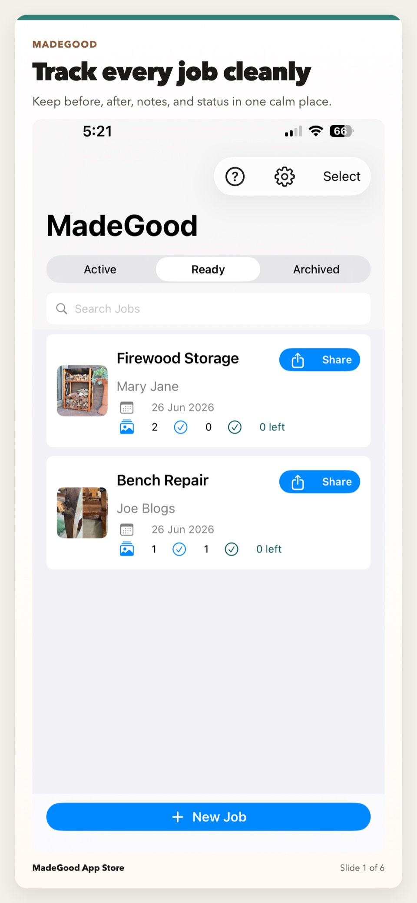
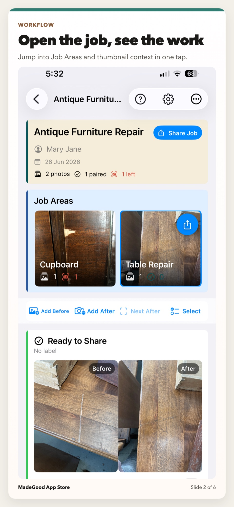
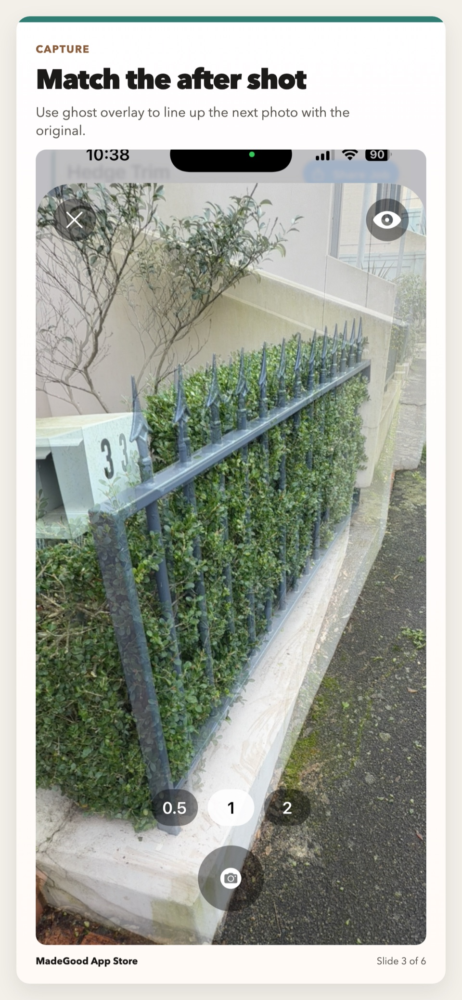

Start here
Quick start
- Create a job and give it a short, recognisable label.
- Add one or more before photos with the camera or photo library.
- Return after the work and use Next After to work through unmatched photos.
- Use the ghost overlay to line up the finished view, or hide it for free framing.
- Review the result and share a pair, a Job Area or the whole job.

Jobs and statuses
A Job holds the photos and optional details for one piece of work. Only the job label is required; client, address and notes add context when useful.
Active, Ready and Archived
- Active includes work with outstanding after photos.
- Ready means the exportable photos are resolved and the job is ready to review or share.
- Archived keeps finished work out of the main list without deleting it.
Use search to find a job by its details. Select mode supports bulk archiving, restoring and deleting.

Adding before and after photos
Tap Add Before or Add After to use the camera. Touch and hold either control to choose an existing image from the photo library.
Photos can be added in either order. A standalone before or after photo can still be kept and shared; pairing is useful when you want a direct comparison.
Matching an after photo
Next After opens the next before photo that still needs a match. In the camera, the saved before appears as a ghost over the live view.
- Stand in approximately the same position and use the same phone orientation.
- Align strong edges, corners or fittings visible in the ghost.
- Use the eye control to hide or show the ghost.
- Capture when the main subject is aligned, then accept or retake the image.
With the ghost visible, MadeGood preserves the before photo’s framing. Hide the ghost when the finished photo should use a different orientation or composition. The ghost is never included in the saved image or export.

Organising larger jobs with Job Areas
Job Areas are optional groups inside a job. Use them for rooms, furniture sections, stages or any division that makes a larger job easier to understand.
- Open the job actions menu and choose Add Job Area.
- Name the area and choose whether current photos should be included.
- Swipe the Job Area carousel sideways to see every area.
- Tap a thumbnail to work within that area.
Manage, rename and reorder areas from the job menu. An overview photo can be selected as the area’s preferred thumbnail. A simple job does not need Job Areas.
Labels, skipping, moving and selecting
- Label: identify a room, defect or detail.
- Skip After: remove a before photo from the Next After queue while keeping it available to share.
- Exclude from Share: retain an internal photo without exporting it.
- Change Before / Retake After: replace an image without recreating the whole item.
- Move to Area: reorganise photos when the job structure changes.
Select mode lets you move, skip or delete several photos together. Choose Select All when every visible photo should be included.
Working with Touch-Up Mixer
Touch-Up Mixer is a separate iPhone app that helps you find and refine colours for small repairs. The palette control on a before-photo card sends that photo and its job context to Touch-Up Mixer. The first tap explains the workflow; after confirmation, later taps hand off directly.
- Tap Touch-Up Mixer on the relevant photo card.
- MadeGood securely queues the handoff, then opens Touch-Up Mixer.
- Create or continue the linked repair and save your work.
- When marking the repair done, choose whether to return it to MadeGood and whether to include an after photo.
- MadeGood attaches the returned photo to the matching item.
This is a foreground handoff between the two installed apps. It does not create a cloud account or background sync.
Team Sharing
Team Sharing uses a folder your team already shares through Files, such as iCloud Drive, Dropbox or Google Drive. It does not require a MadeGood account.
- Open Settings → Team Sharing, enter your name and save it.
- Choose the team's existing shared folder. Each person chooses the same folder on their own device.
- The first person to tap Add to Team for a job becomes its owner.
- Other people tap Refresh Jobs and load the job as contributors.
- Use Sync Job to upload local changes and download team updates.
Contributors can add photos and Job Areas, add a missing after photo, and move pairs between areas. They cannot delete or replace another person's existing photos. Sync is manual rather than live.
Settings, permissions and privacy
Camera access captures job photos. Photo Library access imports images. Location is optional and is used only when you ask MadeGood to fill the job address.
Jobs and photos are stored locally on the iPhone unless you share/export them, send a repair to Touch-Up Mixer, or add a job to your selected Team Sharing folder. MadeGood has no account, analytics, tracking, developer-operated sync server or background upload.
Free exports and MadeGood Pro
MadeGood includes 10 completed exports. Creating jobs, adding photos, organising Job Areas and viewing work remain available without Pro.
MadeGood Pro is a one-time App Store purchase that unlocks unlimited sharing and export. If you already bought it, open Settings and choose Restore Purchase while signed in with the Apple ID used for the purchase.
Troubleshooting
The camera or photo library will not open
Open iOS Settings, find MadeGood and confirm the relevant Camera or Photos permission. Return to MadeGood and try again.
The ghost does not suit the finished photo
Tap the eye control to hide it. This switches to free capture using the current preview framing and phone orientation.
A before photo keeps appearing in Next After
Add its matching after photo or choose Skip After from its photo actions.
Sharing does not complete
Confirm that the destination app is installed and available. Try a smaller selection, such as one pair or one Job Area.
Touch-Up Mixer did not open
The handoff remains queued. Install or open Touch-Up Mixer; it checks for incoming work when it becomes active.
A team job does not show the latest changes
Open Team Sharing and tap Refresh Jobs, then open the local job and tap Sync Job. Confirm that Files can currently open the selected shared folder.
Pro is missing after purchase
Confirm the App Store Apple ID, then use Restore Purchase in MadeGood Settings.
Glossary
- Job
- The record for one piece of work.
- Job Area
- An optional group within a job.
- Pair
- A before and after photo representing the same subject.
- Ghost
- The transparent before-photo guide used while framing an after photo.
- Combined export
- One image containing a before-and-after comparison.
- Skipped
- Kept in the job but removed from the Next After queue.
- Excluded from Share
- Kept internally but omitted from exports.
Read the practical guide to better before-and-after job photos →